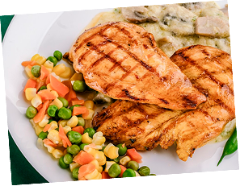
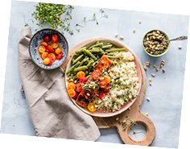

Pendapatan Hari Ini
+212%
Rp 85.000
Menutupi estimasi kerugian Rp 40.000 / minggu • surplus +Rp 45.000
PlusFood - Kantin
🔔 D• Sesi malam berjalan
+212%
Rp 85.000
Menutupi estimasi kerugian Rp 40.000 / minggu • surplus +Rp 45.000
Total 4 menu aktif malam ini • 19 porsi siap diselamatkan • Estimasi potensi omzet tersisa: Rp 44.500
16 porsi / 23 target
Rp 128.500
18 menit / item
4,2 kg CO e
vs kerugian Rp 40.000

tersisa
4/8 porsi terjual

tersisa
7/10 porsi terjual

tersisa
6/8 porsi terjual
Tips Kasir Kantin Srikandi: Diskon 50% di atas pukul 19.30 WIB mempercepat habisnya stok makanan basah hingga 3x lebih cepat oleh mahasiswa asrama Lidah Wetan.